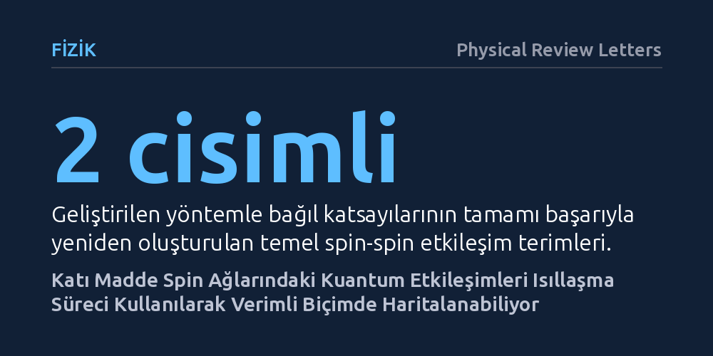

FIZIK · Physical Review Letters · 2026-10-23
Araştırmacılar, karmaşık katı hal kuantum sistemlerindeki bilinmeyen etkileşimleri belirlemek için yüksek sıcaklıkta ısıllaşmadan yararlanan yeni bir haritalama yöntemi geliştirdi. Katı nükleer spin ağında uygulanan bu yöntemle iki, üç ve dört cisimli etkileşim katsayıları verimli biçimde ölçüldü.
Kuantum sistemlerindeki karmaşık etkileşimlerin ölçülmesini zorlaştıran termal dengelenme sürecinin, doğru tasarlandığında bilgi çıkarmak için pratik bir avantaja dönüştürülebileceğini kanıtlıyor.

Kuantum teknolojilerinin ve temel fizik araştırmalarının temelinde, çok sayıda parçacığın birbiriyle nasıl etkileşime girdiğini belirleyen Hamiltonyen fonksiyonunu bilmek yatar. Bir kuantum sisteminin zaman içindeki davranışını, enerji seviyelerini ve kararlılığını bu matematiksel çatı yönetir. Ancak katı haldeki atom çekirdekleri gibi çok parçacıklı sistemlerde spin sayısı arttıkça, olası etkileşimlerin karmaşıklığı hızla tırmanır. Mevcut deneysel denetim olanaklarının sınırlılığı, bu etkileşim haritasını eksiksiz çıkarmayı devasa bir zorluk haline getirir.
Gerçek dünyadaki kuantum simülatörlerini ve işlemcilerini güvenle geliştirebilmek için sistemin arka planında hangi etkileşimlerin baskın olduğunu net biçimde bilmek gerekir. Araştırmacıların peşine düştüğü temel soru şuydu: Katı haldeki karmaşık bir spin ağında, dışarıdan sadece kısıtlı küresel müdahaleler yapabiliyorken, bilinmeyen çok parçacıklı etkileşimler deneysel olarak pratik biçimde nasıl haritalanabilir?
Araştırma ekibi bu soruyu yanıtlamak amacıyla katı haldeki bir nükleer spin ağı üzerinde kontrollü bir laboratuvar deneyi kurguladı. Sistemdeki spinler periyodik radyo frekansı darbeleriyle sürülerek hedeflenen yapay bir etkili Hamiltonyen oluşturuldu. Kuantum sistemlerinde genellikle hassas bilgiyi yok ettiği için kaçınılan yüksek sıcaklıkta ısıllaşma süreci, bu kez etkileşim bilgilerini yüzeye çıkarmak amacıyla yöntemin merkezine yerleştirildi.
Deney protokolünde, hedeflenen etkileşimin yönettiği iki özdeş ısıllaşma sürecinin arasına açısı ayarlanabilir küresel bir döndürme işlemi yerleştirildi. Farklı açılarda sistemin verdiği tepki sinyalleri kaydedildi. Toplanan bu veriler, üç boyutlu döndürmelere özgü SO(3) Fourier dönüşümü ve veri işlemede güçlü bir istatistiksel araç olan temel bileşen analizi (PCA) yardımıyla analiz edildi.
Yapılan ölçümler ve analizler sonucunda araştırmacılar, kurgulanan etkili Hamiltonyenin baskın etkileşim yapılarını başarıyla belirledi. Geliştirilen yaklaşım, nükleer spin ağında yer alan tüm iki cisimli etkileşim terimlerinin bağıl katsayılarını yüksek doğrulukla yeniden inşa etmeyi başardı. Böylece katı maddedeki ikili spin bağlarının kapsamlı bir haritası deneysel olarak elde edildi.
Protokol sadece iki parçacıklı terimlerle sınırlı kalmadı; sistemdeki seçilmiş üç ve dört cisimli yüksek mertebe etkileşimleri de net bir biçimde ayırt etti. En önemli teknik kazanımlardan biri ise protokolün ölçeklenebilirliği oldu: Ölçüm ihtiyacının parametre sayısıyla üssel değil, yalnızca polinomiyal biçimde artması, yöntemin daha karmaşık sistemlere de uyarlanabileceğini kanıtladı.
Elde edilen bulgular, katı hal kuantum teknolojilerinde deneysel karakterizasyon için son derece uygulanabilir bir araç sağlıyor. Kuantum simülatörlerinde istenmeyen parazit etkileşimlerin saptanması ve sistem parametrelerinin hassas kalibrasyonu, bu tür verimli haritalama yöntemleriyle çok daha erişilebilir hale geliyor.
Isıllaşma gibi sistemin doğal dengelenme dinamiğini bir dezavantaj olarak görmek yerine ölçümün motoru haline getirmek, çok cisim fiziğindeki geleneksel engelleri aşmak için yeni bir metodolojik bakış sunuyor. Bu yaklaşım, katı hal nükleer manyetik rezonans tekniklerinin kuantum bilgi işlemedeki rolünü daha da sağlamlaştırıyor.